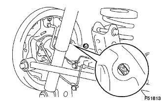

PHANH SAU > THÁO |
| 1. KIỂM TRA ĐỘ DÀY PHẦN MA SÁT CỦA GUỐC PHANH |
|  |
Tháo nút lỗ (kiểm tra) và kiểm tra độ dày phần ma sát má phanh qua lỗ.
| 2. THÁO BÁNH XE SAU |
| 3. XẢ DẦU PHANH |
| 4. THÁO CỤM TRỐNG PHANH SAU |
Nhả cần phanh tay và tháo trống phanh.
 |
Tháo nút lỗ (điều chỉnh) và cắm một tô vít qua lỗ của tấm lưng phanh, và giữ cần điều chỉnh tự động ra xa bộ điều chỉnh.
Dùng một tô vít khác, thu ngắn bộ điều chỉnh guốc phanh bằng cách điều chỉnh bánh.